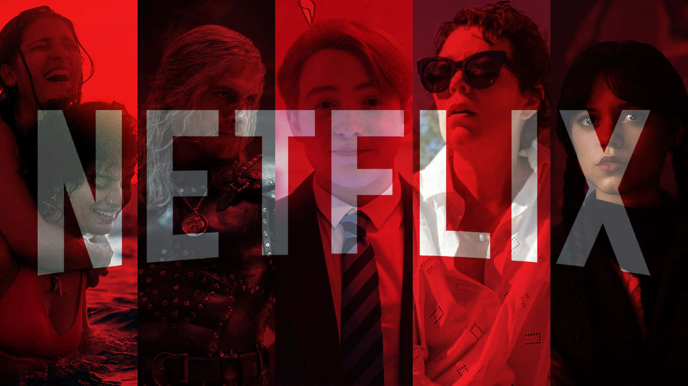

O Veredito Final

Chegamos ao fim da nossa maratona pelo topo do catálogo! Analisamos os maiores fenômenos da plataforma e como essas produções mudaram o cenário do entretenimento digital. De Hawkins aos jogos coreanos, a Netflix provou que sabe prender nossa atenção.
Cada uma dessas séries trouxe algo único: Round 6 quebrou recordes mundiais com sua crítica social ácida; Wandinha revitalizou um clássico com o tom gótico perfeito de Tim Burton; e Stranger Things consolidou a força da nostalgia dos anos 80 na cultura pop atual.
E para você, qual dessas três merece o verdadeiro primeiro lugar? Use o menu de navegação no topo para rever os detalhes e preparar sua próxima maratona!